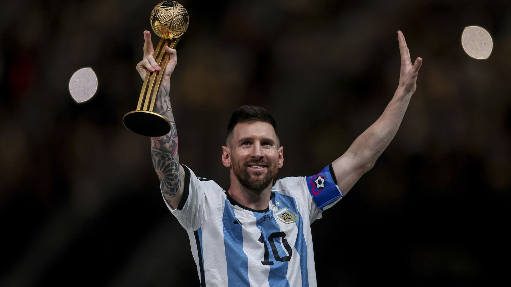

Lionel Andres Messi Cuccittini
The new king after Maradona

Messi winning the world cup 2022
- 1987- Born in Rosario, Argentina
- 2000- Signed with Barcelona and Moved out to Spain
- 2004- Debut with Barcelona FC
- 2008- He won the "Triplete" with Barcelona
- 2009- He won his first Ballon D'Or
- 2012- He broke the world record Scoring 92 goals in a Calendar year
- 2014- He reached the World Cup final and lost against Germany
- 2015- FC Barcelona Signed Luis Suarez and Neymar Jr and became the greatest strikers in the World "the MSN"
- 2019- He wons his sixth Ballon D'or
- 2021- He finished his FC Barcelona's contract after 17 years and 35 titles, He won his seventh Ballon D'or and Conquered the Copa America againts Brazil
- 2022- He won the "Finalissima" Against Italy and the World cup championship against France